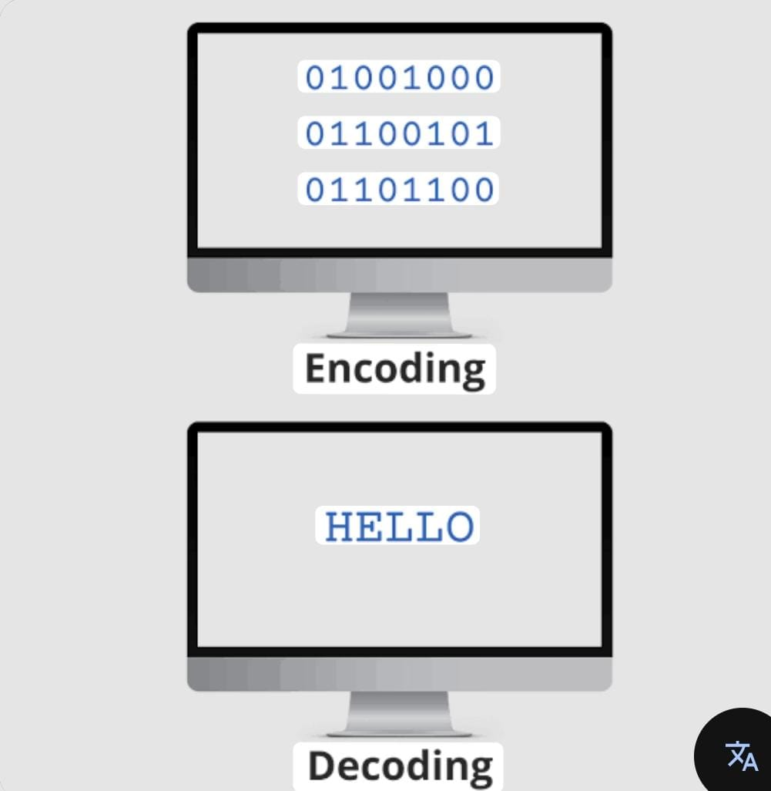

Data Encoding

Encoding determines how data is represented and interpreted.
- ASCII: Uses 7 bits to encode characters (e.g., A =
65).
- UTF-8: Variable-length encoding supporting all
Unicode characters.
- Base64: Encodes binary data as ASCII characters for
transmission over text-based media.
- Hexadecimal: Represents binary data in base-16
(e.g., 0x1F).